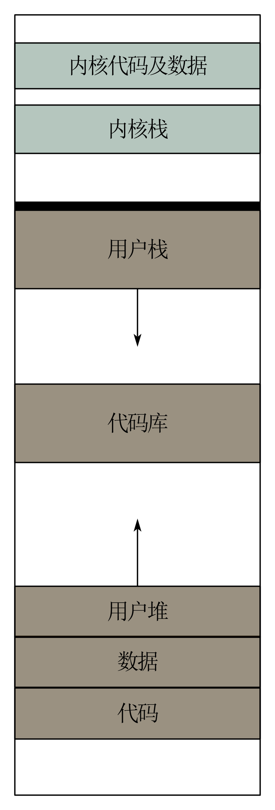
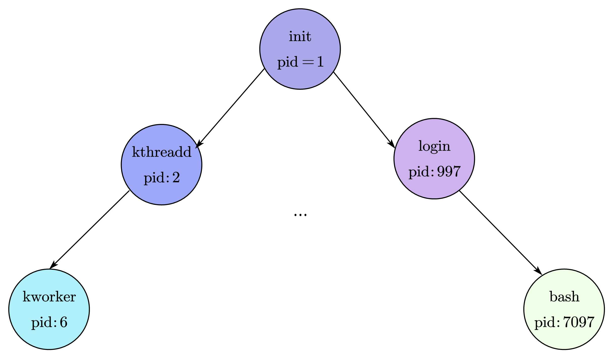
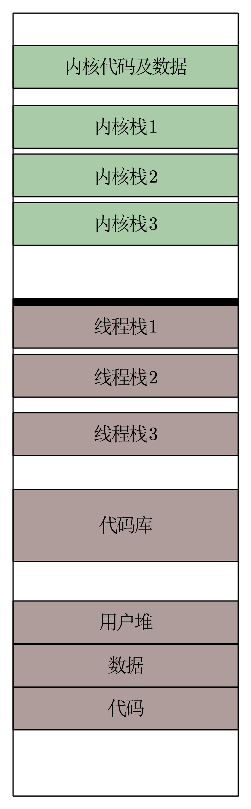

操作系统（二）：进程与线程
进程
为了管理操作系统中各种各样的程序，操作系统定义了进程（Process）的抽象：每个进程都对应于一个运行中的程序。为了使得多个进程可以同时执行，操作系统提出了上下文切换机制，通过保存和恢复进程在运行过程中的状态（即上下文），使进程可以暂停、切换、恢复，从而实现了 CPU 资源的共享。同时，使用虚拟内存机制，为每个进程都提供了独立的虚拟地址空间。
进程状态
为了对进程进行管理，首先需要定义进程的状态。一般来说，进程有以下几种状态。
- 新生状态：此时进程刚刚被创建出来，尚未完成初始化，不可以被调度。当完成初始化后，迁移至预备状态。
- 预备状态：此时进程可以被调度，但是还没有被调度器选择。当被调度器选择时，迁移至运行状态。
- 运行状态：此时进程正在 CPU 上运行。当调度器中断其执行并将其放回调度队列中时，其迁移至预备状态；当其运行结束时，迁移至终止状态；当其需要等待外部事件时，迁移至阻塞状态。
- 阻塞状态：此时进程需要等待外部事件（例如某个 I/O 请求的完成），暂时无法被调度。
- 终止状态：此时进程已经完成了执行，不会再被调度。
进程的内存空间布局
如图所示，进程拥有独立的虚拟内存空间。
- 用户栈：用户栈保留了进程需要的各种临时数据，其扩展方向是自顶向下，栈底在高地址，栈顶在低地址。当有数据压入栈时，栈顶向低地址扩展。
- 代码库：进程执行需要的共享代码库（比如 libc），其被标记为只读。
- 用户堆：堆管理的时动态分配的内存，和栈相反，其扩展方向是自底向上。
- 数据与代码段：数据段主要保存的是全局变量的值，代码段保存的是进程执行所需的代码。
- 内核部分：每个进程的虚拟地址空间里都映射了相同的内核内存。当进程在用户态时，内核内存对其不可见；只有进程进入内核态时，才能访问内核内存。
在 Linux 中，可以使用 cat /proc/PID/maps 来查看某个进程的内存布局。
进程控制块
在内核中，每个进程都通过一个数据结构来描述其状态，这个数据结构成为进程控制块（Process Control Block，PCB）。在不同的操作系统中，PCB 所包含的内容也不一样。在 Linux 4.14 中 PCB 对应的数据结构 task_struct 所包含的部分内容如下
1 | |
进程的上下文（context）包括进程运行时的寄存器状态，其能够用于保存和恢复一个进程在处理器上的运行状态。当操作系统需要切换当前执行的进程时，就会使用上下文切换机制（context switch）。
Linux 中的进程
进程的创建
在 Linux 中进程的创建一般使用 fork 接口，从已有的进程中“分裂”出来。
1 | |
fork 接口非常简单，不接收任何参数，返回的时当前进程的 PID。当一个进程调用 fork 时，操作系统会创建一个和该进程几乎一模一样的新进程。当 fork 刚刚完成时，两个进程的内存、寄存器、程序计数器等状态完全一致，但是这两个线程相互独立，拥有独立的虚拟内存空间和不同的 PID。在 fork 结束以后他们会独立执行，互不干扰。
在调用 fork 之后父子进程之间存在大量的共享，因此会造成很多不确定的行为。例如，假如父进程在 fork 之前打开了一个文件，fork 结束以后，这两个进程都会持有这个文件的文件描述符（File Descriptor）。文件描述符是操作系统提供的对于某一文件引用的抽象，会记录关于文件的一些信息，例如当前位置的偏移量。因此，假如这两个父子进程同时操作该文件，有可能会导致冲突。
除了简单的 fork 接口，Linux 中还有 clone 接口，其拓展了 fork。关于 fork 和 clone 的详细使用方法，可以参考Linux中fork，vfork和clone详解（区别与联系）。
进程管理
进程树
在 Linux 中，由于进程都是通过 fork 创建的，操作系统会以 fork 作为线索记录进程之间的关系。每个进程的 task_struct 都会记录自己的父进程与子进程，进程之间因此形成了进程树的结构。
处于进程树根节点的是 init 进程，它是操作系统创建的第一个进程，之后所有的进程都是由它直接或间接 fork 出来的。
进程间监控：wait
在 Linux 中，进程可以使用 wait 操作来对其子进程进行监控。其由多个变种，这里介绍 waitpid
1 | |
其中第一个参数是需要等待的子进程 id，第二个参数会用来保存子进程状态，最后一个参数包含一些选项。父进程调用 waitpid 对子进程进行监控，如果子进程已经退出，那么 waitpid 会立即返回，并设置 status 变量的值；如果子进程还没有退出，则父进程会被阻塞，并等待子进程退出。
在 Linux 中，wait 操作不仅起到了监控的作用，还起到了回收已经结束的子进程和释放资源的作用。如果父进程没有调用 wait 操作，就算子进程已经终止了，它所占用的资源也不会完全释放，我们将这种进程成为僵尸进程。内核会为僵尸进程保留其进程描述符（PID）和终止时的信息（waitpid 中的 status），以便父进程在调用 wait 时可以监控子进程的状态。不过，如果父进程退出了，那么子进程的信息就不会再被父进程使用，也就没有必要继续保留它们了。此时，所有由父进程创建的僵尸进程都会被内核的第一个进程 init 通过调用 wait 的方式回收。
如果一个父进程调用了一个或若干个子进程，但是父进程在子进程结束之前就已经结束了，那么这些子进程就被成为孤儿进程，这些进程会被 init 进程收养。
进程组和会话
为了方便对进程进行管理，内核还定义了进程组和会话的概念。会话和进程组主要用于 Shell 环境中的进程管理。
进程组是进程的集合，可以由一个或多个进程组成。在默认的情况下，父进程和子进程属于同一个进程组。如果子进程想要脱离当前进程组，可以通过 setpgid 创建一个新的进程组或者移入一个已有的进程组。进程组的一大作用是体现在对信号的处理上，应用程序可以调用 killpg 向一个进程组发送信号，这个信号会被发给该进程组的所有进程。
会话是进程组的集合，可以由一个或多个进程组组成。会话将进程组根据执行状态分为前台进程组和后台进程组。
线程
在早期的操作系统中，进程是调度的最小单元。随着程序并行性的提高，操作系统需要对程序进行更加细粒度的调度，于是就产生了线程（thread）的概念。同一进程下的所有线程共享进程的地址空间，但又各自保留运行时所需的状态（上下文）。在现代操作系统中，线程取代了进程，成为了操作系统调度的最小单位。
线程内存布局
上图是包含三个线程的进程地址空间，其有两个重要特征：
- 分离的内核栈和用户栈：进程为每个线程都准备了不同的栈，供它们存放临时数据。在内核中，每个线程也有对应的内核栈。
- 共享的其他区域：除了栈，进程中的所有其他区域都由该进程的所有线程共享，包括堆、数据段、代码段等。
用户态线程和内核线程
根据线程是由用户应用创建还是内核创建，可以将其分为两类：用户态线程和内核态线程。内核态线程由内核创建，受操作系统调度器管理。用户态线程则是应用创建的，内核不可见，不受操作系统调度器管理。用户态线程中与内核相关的功能（如系统调用）需要内核线程协助才能完成。为了使用户态线程与内核态线程相互协作，操作系统会建立两者之间的关系。一般来说，主要由三种模型：多对一、一对一和多对多。
- 多对一：该模型中一个内核线程服务多个用户态线程，每次只能有一个用户态线程进入内核，其他需要内核服务的线程将被阻塞。随着多核机器的普及，这种模型已不再使用。
- 一对一：该模型中每个用户态线程都有单独的内核态线程，其比一对一模型具有更好的拓展性。这种模型的缺点是，随着用户态线程的增多，创建内核态线程的开销会随之增大。因此，在实现该模型的操作系统中，都会限制用户态线程的总数量。Linux 和 Windows 使用的都是这种模型。
- 多对多：多对多模型将 $N$ 个用户态线程映射到 $M$ 个内核态线程上，其中 $N>M$。这种模型既减轻了多对一模型中因为内核线程数量过少而导致的阻塞问题，也解决了一对一模型中因为内核态线程过多而导致的性能问题。但是这种模型会使得内核态线程的管理变得复杂。macOS 和 iOS 使用的面向用户体验的调度器 GCD 采用了这一种模型。
线程接口
创建
在 POSIX 线程库中，使用 pthread_create 函数来创建线程。 其接受四个参数，分别是线程的引用、线程的属性、线程开始运行的函数、线程运行的参数。
退出
在 POSIX 线程库中，使用 pthread_exit 函数来退出线程。但是这个调用并不是必要的，当线程运行结束后，pthread_exit 会被隐式地调用。
合并
在多线程场景中，有可能会出现几个线程之间相互依赖的情况。因此，线程库中提供了合并（join）操作的函数 pthread_join，其允许一个线程等待另一个线程的执行，并获取其执行的结果。
挂起
pthread 中没有专门挂起的函数，此时可以使用 sleep 函数完成挂起操作。调用该函数后，该线程会处于阻塞状态，等到睡眠结束后将转为预备状态，但是此时并不一定会被调度器选择，因此在睡眠结束之后并不一定会立即被执行。
还有一种挂起是等待某种事件，线程在挂起之前指明等待的具体时间。在 pthreads 中，对应的接口是 pthread_cond_wait。
纤程
由于主流的操作系统都使用一对一的线程模型，用户态线程和内核态线程具有一对一的关系，因此可以认为用户态线程的执行几乎完全收到操作系统调度器的管理。
但是，随着程序越来越复杂，应用的设计者可能更能优化调度的性能。因此，操作系统开始提供更多对用户态线程，即纤程的支持。因为纤程不是操作系统调度的单位，纤程的调度和切换不需要通过操作系统。更多关于纤程的介绍，可以参考Wikipedia
参考资料
《现代操作系统：原理与实现》第 5 章，陈海波，夏虞斌等著